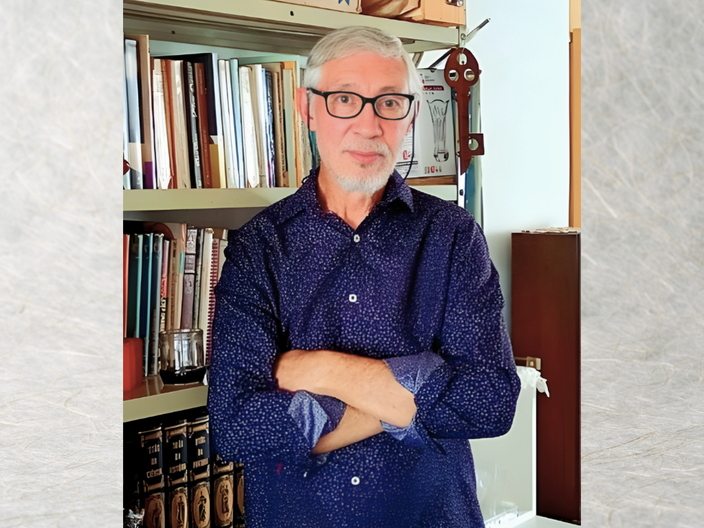
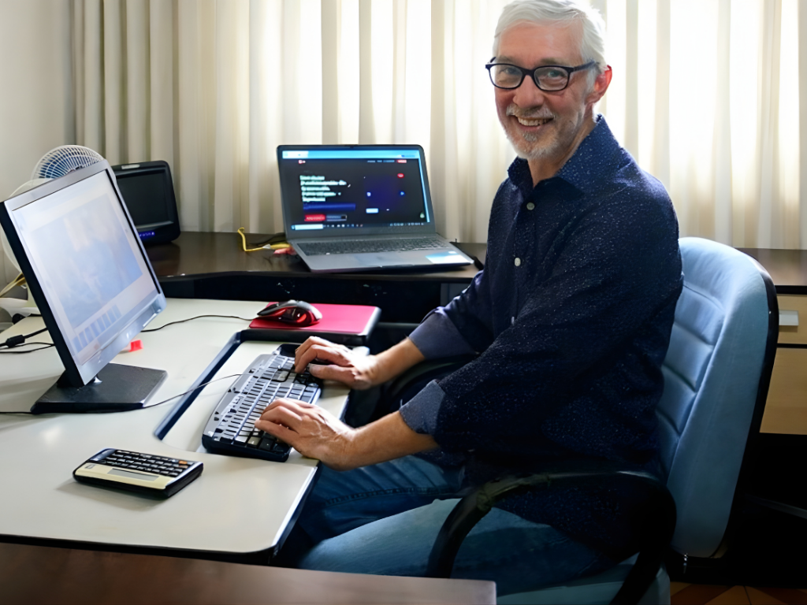
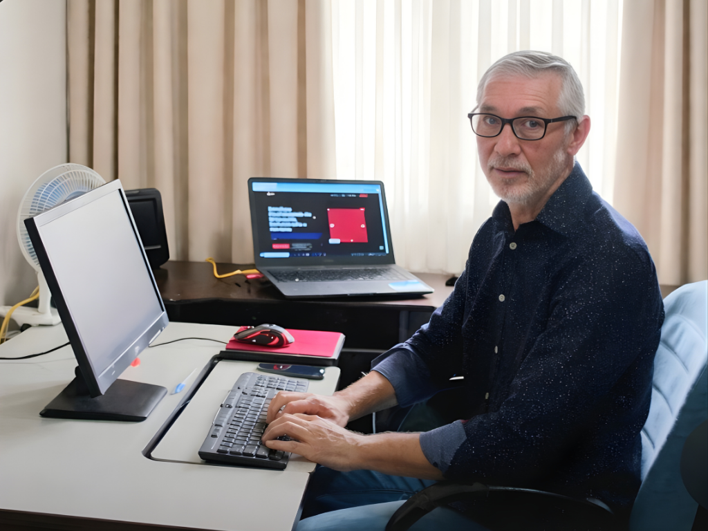
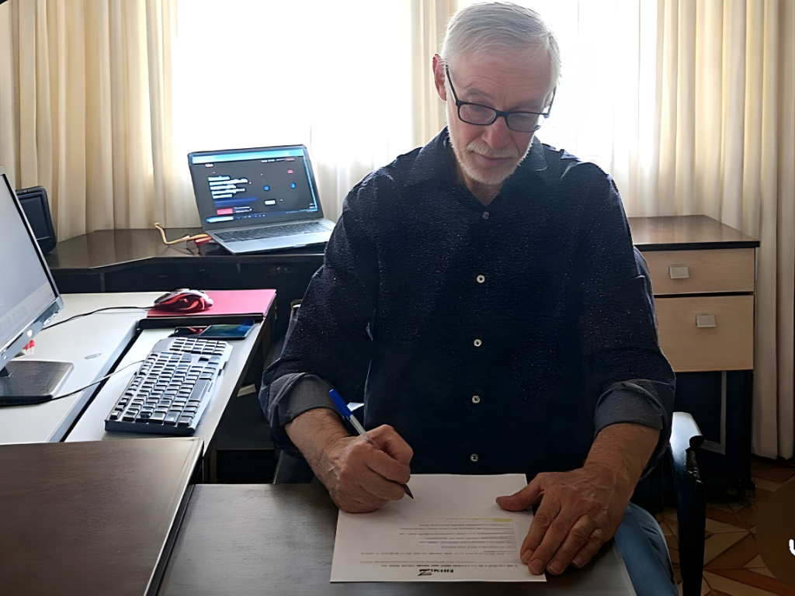

O Início
A JR JARED foi idealizada e fundada em 1996. A motivação para a abertura da empresa surgiu durante minha experiência profissional na Fundação Carlos Alberto Vanzolini (FCAV), ligada à USP, onde identifiquei uma significativa dificuldade dos alunos na elaboração do Trabalho de Conclusão de Curso (TCC), que na época era obrigatório para a obtenção do Certificado de Conclusão.
Após me desligar da FCAV, e a convite para atuar na estrutura dos cursos de MBA da FIA (Fundação Instituto de Administração), também sediada na USP, decidi aprofundar-me em metodologias para a prestação de serviços nessa área. Inicialmente, o foco principal era a digitação, formatação e impressão de matrizes de materiais para posterior reprodução.
Com o know-how adquirido, comecei a ser procurado por diversos professores, alunos e executivos de várias áreas. Percebendo a natureza sazonal do mercado acadêmico, investi em minha própria estratégia de divulgação.
Segmentação e Diversificação dos Serviços
Ao longo do tempo, e com um bom relacionamento no meio acadêmico, a empresa segmentou seus serviços, diversificando as atividades que iam além do carro-chefe da formatação de TCCs, mas sempre mantendo a digitação e formatação de documentos como base.
Um exemplo notável foi o trabalho de formatação realizado para o Bradesco Prime na Avenida Paulista, na área de Certificação, apoiando a qualificação da unidade para a oferta de um determinado serviço. O crescimento da JR JARED sempre foi orgânico, baseado em referências e indicações, o que gerou ótimos resultados.
Adaptação e Novos Segmentos
O período da Pandemia abriu novas perspectivas. Fui contratado para um projeto em parceria com o Sebrae e uma instituição renomada na área de cursos, focando na digitação e inserção de dados em planilhas digitais.
Essa experiência reforçou a percepção de que o modelo de trabalho home office é ideal para a abertura e o desenvolvimento de um novo segmento na empresa.
Atualmente, meu objetivo é aperfeiçoar e solidificar este novo segmento, mantendo a adaptabilidade necessária para um mercado dinâmico, exigente e em constante transformação.




Situação Atual e Próximos Passos
A JR JARED está plenamente apta a realizar serviços em diversas áreas e segmentos, com toda a parte fiscal e contábil em dia e a posse de Certificado Digital.
Pronto para iniciar sua jornada?
Entre em contato conosco e descubra como a JR JARED pode alavancar sua carreira acadêmica e corporativa.